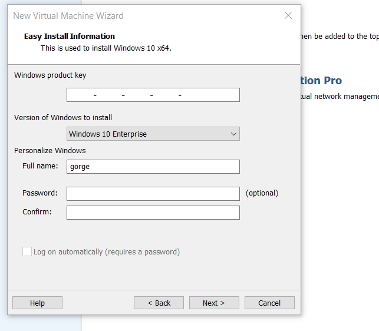

same steps > create new virtual machine > select CLIENTENTERPRISE.iso >


after installation > edit virtual machine settings > remove floppy disk(to avoid from boot issues) > network adapter should be NAT > say OK > play virtual machine
same things as before typical windows installation. This is completely same as before. And very straightforward.

select domain join instead.

our password will be Password

turn off all of this.

again after process is very straighforward. Then once everything set up install vmware tools. And rename the pc.Same process. And this section is done.